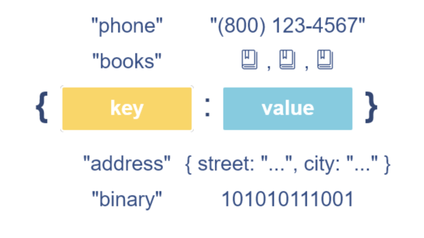
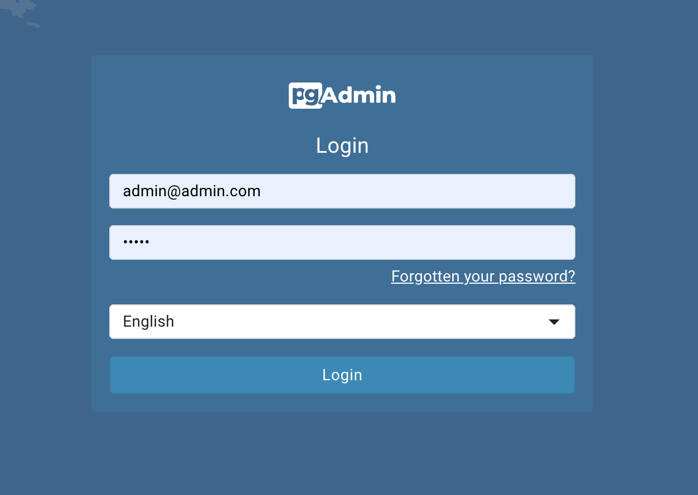
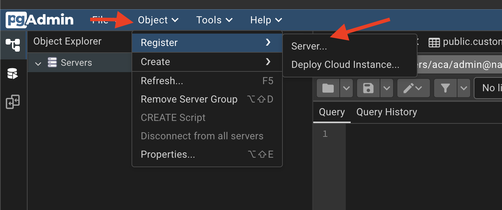
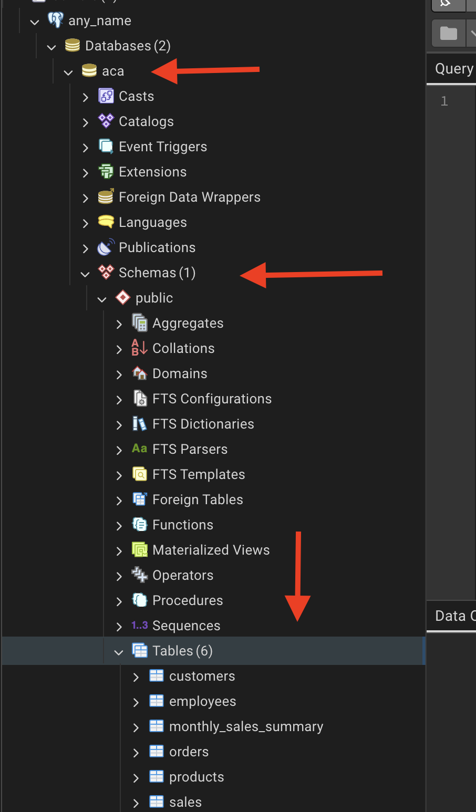
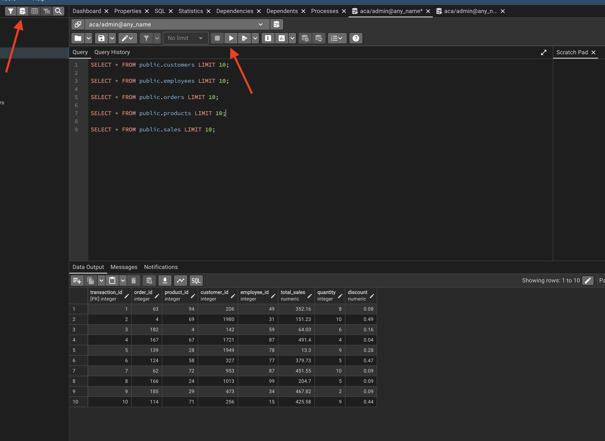

Session 01: Intro to Relational Databases
Learning Goals
- Explain the difference between relational databases and non-relational databases
- Explain the importance of online analytical processing databases (OLAP) and relational database management systems (RDBMS)
- Data Warehouse vs Data Mart vs Data Lake vs Data Lakehouse
- Set up a database environment using docker
Introduction
Now, you have reached the stage in the Program where you need to learn how to manage your data in an institutional way.
To do so, you will need to know structured query language (SQL), the first language of:
- Data analysts
- Analytics Engineers
- Data engineers
- Data scientists.
You cannott call yourself a data analyst until you know the basics of SQL
SQL is the language of Tables!
Besides SQL, you will explore various types of databases and what makes them different from Excel. During the rest of the session, you will get in-depth look at current, everyday practices in the field.
Since the best way to learn SQL is to use it, you will get hands-on tasks at the end of every Exercise.
What is a Database
A database is a collection of stored data, usually organized in tables of rows and columns and managed by a database management system (DBMS). Analysts collectively refer to the data, the DBMS, and other related tools as the database.
While there are several ways to store data in a database, the most common approach is to store the data in columns and rows. The intersection of each column and row is called a cell, and each cell represents a data element.
A Data element could be:
- numeric:
- text
- you name it…
Table: Example of rows, columns, and a highlighted cell
| Col A | Col B | Col C | |
|---|---|---|---|
| Row 1 | A1 | B1 | C1 |
| Row 2 | A2 | B2 (Cell) | C2 |
| Row 3 | A3 | B3 | C3 |
Cell = intersection of Row 2 and Column B → B2.
Spreadsheets vs. Databases
Databases differ from spreadsheets (excel-like tools) in several important ways, particularly in scalability, performance, and the ability to support multiple users. The key distinctions include:
- User Access
- Spreadsheets are typically designed for single-user access.
- Databases allow multiple users to access and manipulate the data simultaneously.
- Data Capacity
- Spreadsheets handle relatively small datasets (usually up to a few hundred thousand rows).
- Databases can efficiently store and process millions or even billions of records.
- Performance
- Spreadsheets load the entire dataset into memory when opened.
- Databases retrieve only the necessary records, improving speed and scalability.
- Query Capability
- Spreadsheets require manual filtering, sorting, and counting.
- Databases allow precise and fast queries using SQL.
Spreadsheet vs. Database Workflow
Let’s say you have a dataset of actors, and you want to count how many actors have the first name “Ed”.
| actor_id | first_name | last_name | last_update |
|---|---|---|---|
| 1 | Penelope | Guiness | 2013-05-26 14:47:57.62 |
| 2 | Nick | Wahlberg | 2013-05-26 14:47:57.62 |
| 3 | Ed | Chase | 2013-05-26 14:47:57.62 |
| 4 | Jennifer | Davis | 2013-05-26 14:47:57.62 |
| 5 | Johnny | Lollobrigida | 2013-05-26 14:47:57.62 |
| 6 | Bette | Nicholson | 2013-05-26 14:47:57.62 |
| 7 | Grace | Mostel | 2013-05-26 14:47:57.62 |
| 8 | Matthew | Johansson | 2013-05-26 14:47:57.62 |
| 9 | Joe | Swank | 2013-05-26 14:47:57.62 |
| 10 | Christian | Gable | 2013-05-26 14:47:57.62 |
When performing tasks such as counting how many actors have the first name “Ed”, the difference between spreadsheets and databases becomes clear:
- Using a Spreadsheet:
- You must manually filter the
first_namecolumn to show only rows containing “Ed.” - After filtering, you manually count the matching rows or read the count displayed by the spreadsheet application.
- With large datasets, loading, filtering, and recalculating can be slow and resource-intensive, causing delays and potential crashes.
- Spreadsheets can process only one query at a time, limiting efficiency.
- You must manually filter the
- Using a Database
Instead of loading the entire dataset, you can execute a single SQL query such as:
SELECT COUNT(*) FROM actor WHERE first_name = 'Ed';The result is returned almost instantly, even with very large datasets.
Databases support multiple users running queries simultaneously without performance degradation.
They are optimized for complex, concurrent data manipulation and retrieval, making them more suitable for scalable and shared environments.
Overall, spreadsheets may be adequate for small, single-user datasets, but databases provide far superior performance, scalability, and efficiency when working with larger datasets or multiple users.
Spreadsheets vs. Databases Summary
| SPREADSHEET | DATABASE |
|---|---|
| Designed for single-user access | Designed for multiple-user access |
| Only one user can manipulate the data at one point in time | Multiple users can manipulate the data at one point in time |
| Handles a limited amount of data | Handles small to massive amounts of data |
| Basic to moderate data operations | Basic to complex data operations |
| Slow or unable to manipulate, extract, transform, and aggregate large amounts of data | Faster to manipulate, extract, transform, and aggregate large amounts of data |
Types of Data
Before we learn about different types of databases, we should understand the distinction between them. Broadly speaking, these below terms refer to how data is organized:
- structured
- unstructured
- semi-structured data.
Structured Data
Each row in the table represents a distinct entity (in this case, an actor), while each column corresponds to a specific attribute such as the actor’s first name. The intersection of a row and a column forms a cell, and each cell contains a single data value.
Importantly, every column is assigned a predefined data type, which determines the kind of information it can store. For example, the first_name column uses a text data type, meaning all values in this column must consist of alphabetical characters only.
Sample Data
| actor_id | first_name | last_name | last_update |
|---|---|---|---|
| 1 | Penelope | Guiness | 2013-05-26 14:47:57.62 |
| 2 | Nick | Wahlberg | 2013-05-26 14:47:57.62 |
| 3 | Ed | Chase | 2013-05-26 14:47:57.62 |
| 4 | Jennifer | Davis | 2013-05-26 14:47:57.62 |
| 5 | Johnny | Lollobrigida | 2013-05-26 14:47:57.62 |
| 6 | Bette | Nicholson | 2013-05-26 14:47:57.62 |
| 7 | Grace | Mostel | 2013-05-26 14:47:57.62 |
| 8 | Matthew | Johansson | 2013-05-26 14:47:57.62 |
| 9 | Joe | Swank | 2013-05-26 14:47:57.62 |
| 10 | Christian | Gable | 2013-05-26 14:47:57.62 |
Unstructured Data
Unstructured data refers to information that does not follow a predefined model or tabular format. Unlike structured data, it has no fixed rows, columns, or consistent organization. Common examples include:
- Emails
- Text messages
- Images and graphics
- Audio and video files
Because it lacks a clear structure, unstructured data is more difficult to search, process, and analyze. Extracting useful information often requires significant manual effort or specialized tools. It can be compared to searching for every instance of a specific word in a book—possible, but time-consuming and inefficient without the right indexing or processing methods.
Semi-Structured Data
Semi-structured data lies between structured and unstructured data. While it does not follow a rigid tabular format, it still maintains a discernible organizational framework, making it more flexible than strictly structured data.
This type of data can be analyzed effectively only when you understand the organizational rules embedded within it. A common example is HTML: although it is not stored in rows and columns, it contains predictable tags and nested elements that define the structure of the information. To locate specific content within an HTML file, you must first understand what each tag represents.
Semi-structured data therefore offers:
- More flexibility than structured tables
- More organization than raw unstructured content
- Better adaptability for evolving or complex data formats
Types of Databases
As you learn about SQL, you will be working with a relational database, a common type of database that all analysts need to be familiar with. That said, relational databases are not only type of database out there. Let’s look at the most important ones and their defining features:
- Relational Databases
- NoSQL Databases
- Graph Databases
- Databases could also be centralized or distributed.
- Databases could also be online analytical processing (OLAP) or online transaction processing (OLTP) system.
Relational Databases
A relational database is a collection of data stored in one or more tables of rows and columns.
Between the different tables, there are links, known as relationships. As you have already learned, data analysts use SQL to query and manipulate the data in relational databases.

Popular relational database management systems (RDBMS) include Microsoft SQL Server,MySQL, Oracle DB and PostgreSQL. Each of these RDBMS is owned by different companies:
- PostgreSQL: PostgreSQL Community
- MySQL: Oracle
- Oracle: Oracle
- MSSQL: Microsoft
| Feature | PostgreSQL | SQL Server | Oracle | MySQL |
|---|---|---|---|---|
| License | Open-source | Commercial + Express | Commercial | Open-source (Oracle-owned) |
| OS Support | Linux, macOS, Windows | Windows, Linux | Linux, Unix, Windows | Linux, Windows |
| Strengths | Standards compliant, JSONB, extensible | Enterprise BI, T-SQL, Microsoft ecosystem | Scalability, security, enterprise features | Fast reads, simple web workloads |
| Best Use Cases | Analytics, complex apps, data science | BI, ERP, corporate apps | Finance, telecom, large enterprises | Web apps, lightweight services |
NoSQL Databases
Unlike relational databases, NoSQL databases have a flexible data model, and they are used to store unstructured, semi-structured, and even structured data. In general, you wouldn’t use SQL to access a NoSQL database, though some have SQL-like languages.
As web applications have become more complex, NoSQL databases have become popular thanks to their flexibility. NoSQL databases are used for applications that change frequently as new functions and features are added; for instance, the social networking site LinkedIn uses a NoSQL database.
Thus, NoSQL databases are non-relational systems designed for scalability, flexibility, and high-volume data. They fall into several major categories depending on their data model.
NoSQL stands for Not Only SQL and refers to database systems that are generally non-relational, designed for flexible schemas and distributed workloads.
Some NoSQL systems provide SQL-like query interfaces, but they do NOT follow the relational model
Key–Value Databases
- Concept: Simple key → value storage.
- Popular systems: Redis, Amazon DynamoDB, Riak KV
- Example (Redis):
{
'course':'Data Analytics',
'company':'ACA'
}
Document Databases
- Concept: JSON-like documents with flexible schema.
- Popular systems: MongoDB, CouchDB, Firestore
- Example (MongoDB):
{
"user_id": 1001,
"name": "Maria",
"roles": ["admin", "manager"]
}
Column-Family (Wide-Column) Databases
- Concept: Data stored in column families across distributed nodes.
- Popular systems: Apache Cassandra, HBase, ScyllaDB
- Example (Cassandra CQL):
INSERT INTO users (user_id, name, age)
VALUES (1001, 'Maria', 33);
Graph Databases
- Concept: Nodes and relationships.
- Popular systems: Neo4j, ArangoDB, Amazon Neptune
- Example (Neo4j Cypher):
CREATE (u:User {name: "Maria"})
CREATE (p:Project {title: "Analytics App"})
CREATE (u)-[:LEADS]->(p);
Time-Series Databases
- Concept: Optimized for timestamped metrics.
- Popular systems: InfluxDB, TimescaleDB, Prometheus
- Example (InfluxDB Line Protocol):

Mostly used among DevOps for monitoring
Search Engine Databases
- Concept: Full-text indexing and search.
- Popular systems: Elasticsearch, OpenSearch, Apache Solr
- Example (Elasticsearch Query):
{
"query": {
"match": {
"message": "database error"
}
}
}
Mostly used for querying logs
Summary Table
| NoSQL Type | Key Concept | Popular Databases |
|---|---|---|
| Key–Value | Key → Value lookups | Redis, DynamoDB, Riak |
| Document | JSON-like documents | MongoDB, CouchDB, Firestore |
| Column-Family | Wide-column storage | Cassandra, HBase, ScyllaDB |
| Graph | Nodes + edges | Neo4j, ArangoDB, Amazon Neptune |
| Time-Series | Time-stamped metrics | InfluxDB, TimescaleDB, Prometheus |
| Search Engine | Text search and indexing | Elasticsearch, OpenSearch, Solr |
OLAP Systems (Online Analytical Processing)

OLAP systems are optimized for READ-heavy analytical workloads. They store large volumes of historical data and support complex queries, aggregations, and trend analysis.
Key Features:
- Designed primarily for reading and analyzing data.
- Not optimized for frequent inserts/updates/deletes.
- Stores historical and summarized information.
- Supports advanced analytics: dashboards, reports, trends, forecasting.
- Typically powered by data warehouses or data marts.
Example: An e-commerce analyst retrieves last year’s order data from a data warehouse and analyzes trends across months, categories, or customer segments.
Common Technologies: Amazon Redshift, Snowflake,BigQuery, Apache Hive, Microsoft SQL Server Analysis Services.
OLTP Systems (Online Transaction Processing)

OLTP systems are optimized for fast inserts, updates, and deletes. They handle high-volume transactional operations in real time.
Key Features:
- Processes large numbers of small, atomic transactions.
- Ensures consistency using ACID properties.
- Optimized for real-time operations.
- Used by operational systems rather than analytics.
Example: A bank’s ATM network continuously inserts, updates, or deletes records as customers make withdrawals, deposits, or transfers.
Common Technologies: PostgreSQL, MySQL, Oracle, SQL Server, MongoDB (as transactional store).
ACID Transactions
In computer science, ACID (Atomicity, Consistency, Isolation, Durability) is a set of properties that guarantee the correctness of database transactions.
A transaction is treated as a single unit of work: - Either all operations succeed, or none do - The database remains in a valid state even in the presence of errors, crashes, or power failures
Example:
A bank transfer that debits one account and credits another must either complete fully or not happen at all.
ACID properties are commonly associated with relational databases and OLTP systems.
BASE Systems
BASE (Basically Available, Soft state, Eventually consistent) is an alternative design philosophy used mainly in distributed systems.
BASE systems: - Prioritize availability over immediate consistency - Allow temporary inconsistencies - Guarantee that data will become consistent eventually
This approach is common in large-scale, distributed NoSQL systems where uptime and scalability are more critical than strict transactional guarantees.
The CAP Theorem
The CAP theorem states that a distributed system cannot simultaneously guarantee all three of the following properties:
- Consistency (C): every read returns the most recent write
- Availability (A): every request receives a response
- Partition Tolerance (P): the system continues operating despite network failures
In the presence of a network partition (which is unavoidable in distributed systems), a database must choose between Consistency and Availability.
As a result:
- Some systems favor strong consistency and may reject requests during failures
- Others favor high availability and may return temporarily inconsistent data
Important Clarification
The CAP theorem does NOT state that a system must be either ACID or BASE.
- CAP describes trade-offs in distributed systems
- ACID and BASE describe transactional and consistency models
Modern databases often implement hybrid approaches, providing:
- ACID guarantees within limited scopes (e.g., single node, single partition)
- Relaxed consistency across distributed components
Trade-offs always exist, but real-world systems rarely fit into pure categories.
OLAP vs OLTP: Summary
| Feature | OLAP | OLTP |
|---|---|---|
| Primary purpose | Analytics, reporting | Real-time transactions |
| Query type | Read-heavy, complex | Write-heavy, simple |
| Data volume | Historical, large datasets | Current transactional data |
| Performance optimized for | Aggregations, scans | Fast inserts/updates/deletes |
| Common use cases | Dashboards, BI, trend analysis | Banking, retail transactions, booking systems |
| Users | Analysts, data scientists | End-users, applications, machines |

Type of Storing Databases
The three kinds of databases discussed above can be centralized or distributed. Put simply, these concepts refer to where the database is stored.

Centralized Databases
A centralized database runs on a single machine (single-node). All users, analysts, and administrators connect to this one server.
Key Features:
- All data lives in one powerful machine.
- Easy to manage and maintain.
- Can handle billions of records and terabytes of data.
- Scaling requires buying larger, more expensive hardware (vertical scaling).
- Once the system reaches hardware limits, performance and management become challenging.
Common in: Traditional enterprises, internal IT systems, on-premise setups.
Analogy: A workstation or laptop, but with high-end server specifications.
Distributed Databases
A distributed database stores data across multiple machines (nodes). These nodes work together to form one logical database.
Key Features:
- Designed for massive-scale data.
- Scales horizontally by adding more machines.
- Faster data access and search due to parallel processing.
- More cost-effective storage.
- Higher availability and fault tolerance.
Common in:
- Banking systems
- Telecommunications
- Large tech companies (Google, Facebook, Amazon, Netflix)
To handle constantly growing data, high query loads, global users, and real-time applications.
Centralized vs Distributed Databases: Summary
| Feature | Centralized Database | Distributed Database |
|---|---|---|
| Storage location | One machine | Many machines |
| Scalability | Vertical (add more power) | Horizontal (add more nodes) |
| Typical capacity | High but limited by hardware | Extremely high, virtually unlimited |
| Cost | Expensive to scale | More cost-efficient |
Data Management Architectures
Okay, we got high level understanding about the databases and their types, however in real life applications we need to master the so called Data Management Architecture (DMA). Let’s go over them chronologically:
- Data Warehouse (DW)
- Data Mart (DM)
- Data Lake (DL)
- Data Lakehouse (DLH)
Data Warehouse (DW)
The earliest large-scale analytics storage (1980-90s).
A Data Warehouse is a centralized, structured, and governed analytical storage designed for reporting, business intelligence, and decision-making. Everything inside is modeled, cleaned, validated, and optimized for SQL analytics.

Purpose
- Provide a single version of truth for the organization.
- Serve business reporting, dashboards, KPIs.
- Allow analysts to run consistent, repeatable metrics.
Architecture
- Core storage: relational tables in Star or Snowflake schema.
- ETL/ELT pipelines transform raw data into structured models.
- Strong governance: data quality rules, validation layers, semantic models.
Schema Approach
- Schema-on-write: data must be modeled before it enters.
- Facts (large numerical tables).
- Dimensions (lookup tables with business attributes).
- Conformed dimensions for uniform interpretation (e.g., Customer, Product).
Query Model
- Aggregations, joins, slicing/dicing, reporting.
- Optimized for read-heavy workloads.
Advantages
- High data quality
- Strong governance
- Fast SQL analytics
- Business-friendly, predictable models
Limitations
- Rigid: changes require redesign
- Poor for raw, unstructured data
- Expensive for large-scale storage
- Not ideal for ML pipelines that need raw historical data
Typical Tools/Platforms
- Snowflake (warehouse mode)
- Amazon Redshift
- Google BigQuery (classic DW usage)
- Teradata
- Oracle Exadata
Relationship to others
- DW is the parent of DM.
- DW predates DL and DLH.
Data Mart (DM)
Introduced after Data Warehouses (late 1990s).
A Data Mart is a subject-specific, department-focused subset of a Data Warehouse. It is optimized for a particular business domain such as Marketing, Finance, Sales, HR, or Operations.

Purpose
- Reduce load on the central Data Warehouse.
- Deliver faster, domain-specific analytics.
- Allow departments to have tailored KPIs and models.
- Improve performance by minimizing unnecessary joins and tables.
Architecture
- Usually built as dependent data marts, sourced from the DW.
- Sometimes built as independent data marts (less common today).
- Domain-specific schemas (e.g., Marketing Mart, Finance Mart).
- Can use star/snowflake schemas but simplified for a business unit.
Schema Approach
- Schema-on-write (same as DW).
- Contains facts/dimensions relevant only to one business domain.
- May extend or customize dimensions (e.g., Marketing_Customer).
Query Model
- Faster analytical queries for a single domain.
- Reduced table complexity.
- Supports dashboards, KPI reporting, and departmental insights.
Advantages
- High performance for domain-specific workloads
- Reduces contention on the central DW
- Simpler models for end users
- Enables data ownership by individual departments
Limitations
- Can create data silos if unmanaged
- Requires synchronization with DW
- Potential duplication of logic if marts diverge
Typical Tools/Platforms
- Snowflake Data Marts
- Redshift Data Marts
- BigQuery departmental datasets
- Microsoft SQL Server departmental warehouses
Relationship to others
- DM is the child of DW.
- Relies on DW for consistency.
- Not directly related to Data Lakes or Lakehouses except in hybrid architectures.
Data Lake (DL)
Introduced during the Big Data era (2010s).
A Data Lake is a large-scale, low-cost, raw-data storage system that can ingest structured, semi-structured, and unstructured data without modeling.

Purpose
- Store massive amounts of raw data cheaply.
- Support machine learning and exploratory analytics.
- Capture
logs,JSONfiles,clickstreams,IoTdata,images,audio. - Preserve granular, historical data with no loss.
Architecture
- Built on object storage (S3, GCS, ADLS, or HDFS).
- Organized into zones: raw, curated, prepared.
- Ingestion via ELT pipelines.
- Often uses frameworks like
Spark,Hive,Presto, orDremio.
Schema Approach
- Schema-on-read: structure is applied only at query time.
- Supports open formats: Parquet, ORC, Avro, CSV, JSON.
- Can handle unstructured formats (text, logs, images).
Query Model
- Flexible but slower than DW for SQL analytics.
- Best for ML workloads requiring raw historical data.
- Handles batch and streaming ingestion.
Advantages
- Extremely flexible storage model
- Very low cost for large-scale data
- Excellent for ML, experimentation, and data science
- Decouples storage from compute
Limitations
- No ACID guarantees in traditional lakes
- Poor governance (risk of “data swamp”)
- Hard for business teams to use directly
- Not optimized for BI dashboards
Typical Tools/Platforms
- AWS S3 + Athena / EMR
- Azure Data Lake Storage
- Google Cloud Storage + BigQuery external tables
- Hadoop HDFS
- Databricks in lake mode
Relationship to others
- DL evolved after DW and DM.
- Predecessor of the DLH.
- DW and DL often coexist in two-tier architectures.
Data Lakehouse (DLH)
The most modern architecture (2020s).
A Data Lakehouse is a unified, ACID-compliant, analytics + ML architecture built on top of Data Lake storage.
It merges the strengths of Data Warehouses and Data Lakes into a single system.

Purpose
- Provide a single platform for SQL analytics, BI, ML, and streaming.
- Avoid duplication between DW and DL.
- Guarantee ACID transactions and strong governance on cheap lake storage.
- Support both structured and unstructured data.
Architecture
- Storage on cloud object stores (S3, ADLS, GCS).
- ACID table formats: Delta Lake, Apache Iceberg, Apache Hudi.
- Metadata layers for schema enforcement, governance, versioning.
- Compute engines: Spark, Databricks, Presto/Trino, Snowflake, BigQuery.
Schema Approach
- Supports both schema-on-write and schema-on-read.
- Allows schema evolution, time travel, and versioning.
- Enforces constraints even on raw lake storage.
Query Model
- High-performance SQL (warehouse-like).
- ML workloads (lake-like).
- Supports batch, streaming, and real-time analytics.
- Works for both BI dashboards and ML pipelines.
Advantages
- Unifies DW + DL into one architecture
- ACID guarantees on object storage
- Suitable for both BI and ML
- Simplifies pipelines and governance
- Scalable and cost-effective
Limitations
- Requires organizational adoption and re-skilling
- Governance maturity varies by platform
- Classic DW teams may struggle to transition
Typical Tools/Platforms
- Databricks Lakehouse (Delta)
- Snowflake (Unistore + Iceberg)
- BigQuery (Lakehouse-friendly design)
- Apache Iceberg + Trino/Presto
- Apache Hudi platforms
Relationship to others
- DLH is the evolution of the Data Lake.
- DLH aims to unify and simplify analytics workloads.
- DLH may replace DW in modern architectures.
**Database Layers
- Operational Database (OLTP): Primary system of record for real-time transactions; normalized schema, ACID guarantees.
- Data Warehouse: Curated, structured, and historical store optimized for analytics; fed via ETL/ELT pipelines and supports dimensional models (star/snowflake).
- Data Lake: Low-cost storage for raw, semi-structured, and unstructured data at scale; schema-on-read enables flexible exploration.
- Data Lakehouse: Combines lake storage with warehouse-like governance and performance (ACID tables, time travel, unified catalog).
- Data Mart: Focused slice of the warehouse or lakehouse tailored for a specific team/domain to simplify access and controls.
- Staging/Raw Layer: Landing zone for ingested data before cleansing and modeling; keeps reproducible snapshots of source data.
Intro to SQL
SQL (Structured Query Language) was first developed by IBM in the early 1970s and released publicly in 1979. It was later standardized by the American National Standards Institute (ANSI), establishing it as the primary language for interacting with relational databases.
SQL is used for three core tasks:
- Manipulating Data: inserting, updating, or deleting records within a database.
- Searching Data: retrieving all films that feature a specific actor (e.g., Ed Chase).
- Defining Database Structures: For instance, creating new tables or adding columns to existing ones.
Like any language, SQL follows specific syntax rules.
- An English sentence ends with a period.
- A SQL statement ends with a semicolon (;).
While the foundational syntax is consistent, slight variations may occur depending on the database system (e.g., PostgreSQL vs. SQL Server). Understanding these conventions is essential before writing your own SQL queries.
SQL generally counts as code even though it is NOT technically a programming language.
You willl encounter a common phenomenon when you start working with it: finding yourself in situations where you cannot solve a coding problem using only your existing knowledge. Do not worry, as this happens to all beginners, and it is something you will have to learn to deal with.
Most coders spend a fair amount of time researching answers to their problems online. There is no need to get frustrated if you run into a brick wall—simply Google what you are trying to achieve in SQL (or any other language), and you may be surprised how quickly you will find an answer to your problem!
Building our first Database
Now that we have high level understanding about the databases, their types and architectures, it is high time to build our first database and continue.
In order to be able to build and run the database you need to keep docker desktop active. If you have note installed Docker yet, check out the installation and testing steps here PS you will see how easy it is.
What are we going to achieve?
We are going to build a relational database which will consist of the following tables.
- Sales
- Time Dimension
- Product Dimension
- Employee Dimension
- Customer Dimension

This is going to be part of your portfolio, make sure the make it as structured as possible.
Step 1: Create New GitHub Repository
- Log in to GitHub.
- Click New Repository.
- Repository name:
sql-analytics-portfolio
- Check Add a README file.
- Check Add .gitignore and choose None.
- Click Create Repository.
Step 2: Clone the Repository
- Create a folder named
acaon your Desktop or wherever you want - Open your terminal there. You should see
~/aca - Type in your terminal:
git clone <your-repository-url>- Navigate to that folder by typing:
cd <your-repository-url>- type
code .to open the project with VS Code - RECOMMENDED save the project in VS Code using the Project Manager extension
Step 3: Download the data
- Create a new folder inside of the project named
data - Download the following
csvfiles and put in thedatafolder - customers.csv
- employees.csv
- orders.csv
- products.csv
- sales.csv
- Add and commit the changes done so far
git add .
git commit -m "Added data folder with CSV datasets"Step 4: Update .gitignore
- Open the
.gitignorefile in your repository and add the following two lines at the bottom:
pgadmin_data/
postgres_data/- Again add and commit
git add .gitignore
git commit -m "Updated .gitignore to exclude database volumes"Step 5: Creating Init folder and SQL files
We are going to create init files which will be executed only during the first db initialization.
- Create a folder named
init - Inside of the
init foldercreate a file named01_schema.sqlfor database schema code. Copy the respective chunk there - Inside of the
init foldercreate a file named02_etl.sqlfor data loading to SQL - Add and Commit the changes
git add init/
git commit -m "Added initial schema and ETL SQL files"01_schema.sql
-- 01_schema.sql
-- Safety: drop if you are iterating (comment these in production)
-- DROP TABLE IF EXISTS sales CASCADE;
-- DROP TABLE IF EXISTS orders CASCADE;
-- DROP TABLE IF EXISTS products CASCADE;
-- DROP TABLE IF EXISTS customers CASCADE;
-- DROP TABLE IF EXISTS employees CASCADE;
CREATE TABLE IF NOT EXISTS employees (
employee_id SERIAL PRIMARY KEY,
first_name TEXT,
last_name TEXT,
email TEXT,
salary NUMERIC
);
CREATE TABLE IF NOT EXISTS customers (
customer_id INTEGER PRIMARY KEY,
customer_name TEXT,
address TEXT,
city TEXT,
zip_code TEXT
);
CREATE TABLE IF NOT EXISTS products (
product_id INTEGER PRIMARY KEY,
product_name TEXT,
price NUMERIC,
description TEXT,
category TEXT
);
-- orders: include year/quarter/month as stored columns (loaded from CSV)
CREATE TABLE IF NOT EXISTS orders (
order_id INTEGER PRIMARY KEY,
order_date TIMESTAMP,
year INT,
quarter INT,
month TEXT
);
CREATE TABLE IF NOT EXISTS sales (
transaction_id INTEGER PRIMARY KEY,
order_id INTEGER REFERENCES orders(order_id) ON DELETE RESTRICT,
product_id INTEGER REFERENCES products(product_id) ON DELETE RESTRICT,
customer_id INTEGER REFERENCES customers(customer_id) ON DELETE RESTRICT,
employee_id INTEGER REFERENCES employees(employee_id) ON DELETE SET NULL,
total_sales NUMERIC,
quantity INTEGER,
discount NUMERIC
);
-- Helpful indexes
CREATE INDEX IF NOT EXISTS idx_sales_order_id ON sales(order_id);
CREATE INDEX IF NOT EXISTS idx_sales_product_id ON sales(product_id);
CREATE INDEX IF NOT EXISTS idx_sales_customer_id ON sales(customer_id);
CREATE INDEX IF NOT EXISTS idx_orders_date ON orders(order_date);02_etl.sql
-- COPY must read files inside the container; we mounted ./data to /docker-entrypoint-initdb.d/data
\echo 'Loading employees...'
COPY employees(employee_id,first_name,last_name,email,salary)
FROM '/docker-entrypoint-initdb.d/data/employees.csv'
WITH (FORMAT csv, HEADER true);
\echo 'Loading customers...'
COPY customers(customer_id,customer_name,address,city,zip_code)
FROM '/docker-entrypoint-initdb.d/data/customers.csv'
WITH (FORMAT csv, HEADER true);
\echo 'Loading products...'
COPY products(product_id,product_name,price,description,category)
FROM '/docker-entrypoint-initdb.d/data/products.csv'
WITH (FORMAT csv, HEADER true);
\echo 'Loading orders...'
COPY orders(order_id,order_date,year,quarter,month)
FROM '/docker-entrypoint-initdb.d/data/orders.csv'
WITH (FORMAT csv, HEADER true);
\echo 'Loading sales...'
COPY sales(transaction_id,order_id,product_id,customer_id,employee_id,total_sales,quantity,discount)
FROM '/docker-entrypoint-initdb.d/data/sales.csv'
WITH (FORMAT csv, HEADER true);Pay attention to the orders and think about it.
Step 6: Create .env file
This file is going to setup the database parameters
- Create
.envfile in theroot - Copy and paste the following there
PORT=5432
DB_USER=admin
DB_PASSWORD=password
DB_NAME=aca
PGADMIN_EMAIL=admin@admin.com
PGADMIN_PASSWORD=admin- Add and commit
.envfile
git add .env
git commit -m "Added environment variables for PostgreSQL"Step 7: Create the docker-compose.yaml File
- Create
docker-compose.yamlfile - copy and paste the following code there
services:
db:
container_name: postgresql_db_aca
image: postgres:17
restart: always
env_file: .env
environment:
POSTGRES_USER: ${DB_USER}
POSTGRES_PASSWORD: ${DB_PASSWORD}
POSTGRES_DB: ${DB_NAME}
ports:
- "5432:5432"
healthcheck:
test: ["CMD-SHELL", "pg_isready -U ${DB_USER} -d ${DB_NAME}"]
interval: 10s
timeout: 5s
retries: 10
volumes:
# Persist database data (keep your bind mount; a named volume also works)
- ./postgres_data:/var/lib/postgresql/data
# Run these once on first initialization
- ./init:/docker-entrypoint-initdb.d
# Make CSVs available to COPY during init (read-only)
- ./data:/docker-entrypoint-initdb.d/data:ro
pgadmin:
container_name: pgadmin_aca
image: dpage/pgadmin4
restart: always
env_file: .env
environment:
PGADMIN_DEFAULT_EMAIL: ${PGADMIN_EMAIL}
PGADMIN_DEFAULT_PASSWORD: ${PGADMIN_PASSWORD}
ports:
- "5050:80"
volumes:
- ./pgadmin_data:/var/lib/pgadmin
depends_on:
- db- Add and commit
git add docker-compose.yaml
git commit -m "Added Docker Compose configuration for PostgreSQL and pgAdmin"- Now your repository must have the following structure
.
├── README.md
├── .gitignore # Ignoring
├── .env # Environment variables for PostgreSQL
├── docker-compose.yaml # Docker Compose configuration
├── data/ # CSV datasets
│ ├── customers.csv
│ ├── employees.csv
│ ├── orders.csv
│ ├── products.csv
│ ├── sales.csv
├── init/ # SQL initialization scripts
│ ├── 01_schema.sql # Database schema creation
│ ├── 02_etl.sql # Data loading and ETL processStep 8: Run the Docker Environment
- Open the integrated terminal in VS Code.
- Ensure
Docker Desktopis running on your machine. - Then start the database services:
docker compose upStep 9: View the Tables
- Once running, access pgAdmin in your browser by http://localhost:5050
- username:
admin@admin.com - password:
admin

Open Object\(\rightarrow\)Register\(\rightarrow\)Server 
In the general under the name column

Click on the connection and fill in:
- hostname must be the same as the postgres service name in
docker-compose.yaml, which isdb, - port
5432 - maintenance database:
aca - username:
admin - password:
password
- hostname must be the same as the postgres service name in
Navigate to in my case: \(any_name \rightarrow aca \rightarrow Schemas \rightarrow public \rightarrow Tables\)

Click on the
query toolcopy and paste the queries provided in the Step 10
Step 10: Our First Queries | Preview
Use the following SQL statements to preview the first 10 rows from each table after loading your CSV data.
A schema is a logical container inside a PostgreSQL database. You can think of it as a folder that holds database objects.
The default schema is public.
SELECT * FROM public.customers LIMIT 10;
SELECT * FROM public.employees LIMIT 10;
SELECT * FROM public.orders LIMIT 10;
SELECT * FROM public.products LIMIT 10;
SELECT * FROM public.sales LIMIT 10;Step 11: Close and Delete Containers
As soon as you finish the job related to the DB, remove the containers by typing
docker-compose downStep 12: Every time you re-run
We are going to deactivate and activate constantly, so you will get used to it. Don’t worry :)
docker-compose upIn case of ANY CHANGE in the docker-compose.yaml file:
docker compose down -v- delete
postgres_datafolder docker compose up --build
STEP 13: Detached Mode
Once we have databes working properly instead of docker compose up you can use the following command to run the containers in detached mode:
docker compose up -d